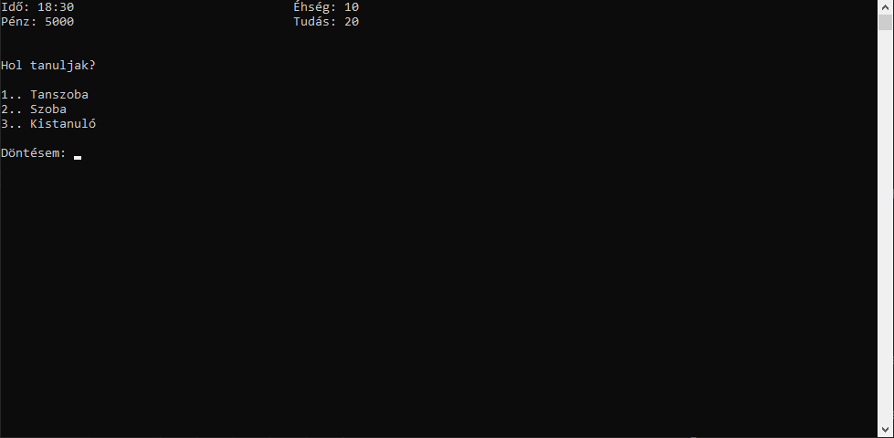

Tevékenységek
Fürdés
A kollégiumban minden nap lefürödhetsz. Természetesen ez nem ilyen egyszerű mivel minden nap valami problémába akadsz, de általában nem változtat sokat a döntésed.
A kollégiumban minden nap lefürödhetsz. Természetesen ez nem ilyen egyszerű mivel minden nap valami problémába akadsz, de általában nem változtat sokat a döntésed.

Tanulás
A tanulás nem csak tevékenységként, hanem a játékmenetet alatt is fontos. A tanulás fül alatt helyszínt választunk majd a szembejövő problémák megoldása után tanulunk.
A tanulás nem csak tevékenységként, hanem a játékmenetet alatt is fontos. A tanulás fül alatt helyszínt választunk majd a szembejövő problémák megoldása után tanulunk.
WC
Természetesen a kollégiumban található WC is ahol a szükségleteidet elvégezheted.
Természetesen a kollégiumban található WC is ahol a szükségleteidet elvégezheted.

Evés/Szórakozás
A legfontosabb helység ahol tevékenységeket fogsz végezni a szoba. A szobádban kezded és zárod a napodat, itt tudsz enni esténként, beszélgetni, telefonozni.
A legfontosabb helység ahol tevékenységeket fogsz végezni a szoba. A szobádban kezded és zárod a napodat, itt tudsz enni esténként, beszélgetni, telefonozni.